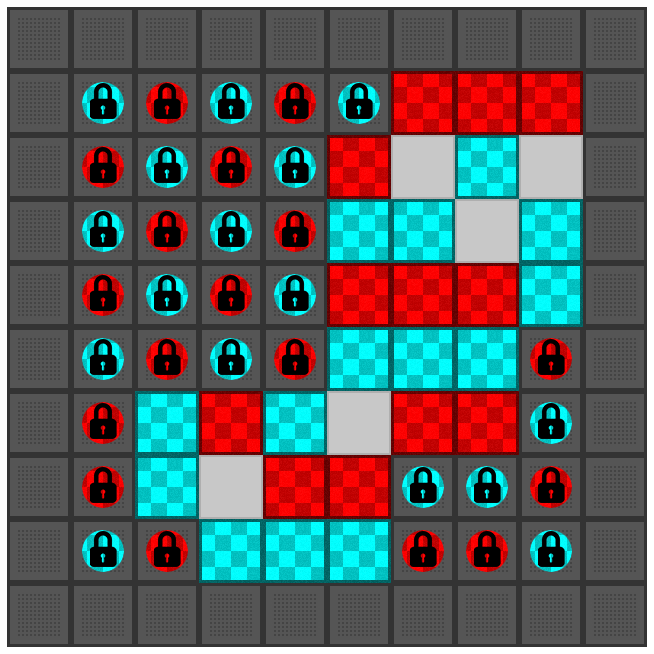
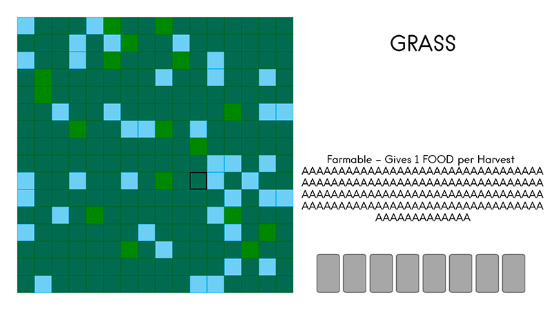
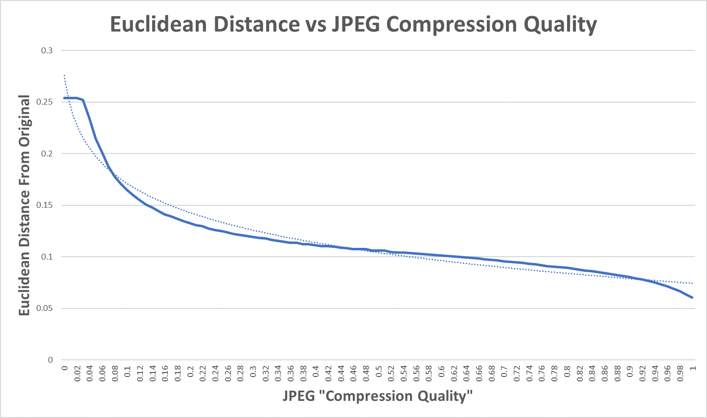

I chose to do my dissertation on finding new training algorithms (e.g. Optimisation Algorithms) for Neural Networks.
However, I did have an idea for another dissertation which I chose not to pursue, this blog post serves as a brief record of this idea.
I have spent many hours studying Optimisation Algorithms and I observed that each one can be described as some modification of the Genetic Algorithm - aka. Darwinian Evolution.
For example, the Simulated Annealing algorithm is GA with a population of two with crossover disabled.
I hypothesised that every Optimisation Algorithm is actually just Darwinian Evolution in disguise.
I could find no counter-examples to disprove this theory, though to prove it for certain I'd have to prove that every possible Optimisation Algorithm that exists and could exist were Darwinian Evolution in disguise.
That sounded a pretty hard task and so I opted for the more 'fun' dissertation idea.
(Better name pending). The idea for this game came from the somewhat niche Japanese game StepMania.
There is a tiny subset of the StepMania community who use their PC keyboard rather than the intended dancepad.
This superior input method means they can achieve faster and more precise moves, pushing them near to the maximum human reaction time.
I decided to produce a game that is based around the keyboard with more interesting game mechanics.
Over a few weekends I produced this game:
I kept the hp-bar and the basic scoring system from StepMania but added powerups, such as score-modifiers, time-modifiers and arrows which give negative debuffs.
This game is very fun and I saw a big improvement in my score after a few hours of time.
I hope to continue working on this game in the future.
Turfwar is a simple-to-learn, hard-to-master, abstract, turn-based, strategy game I designed and developed.
It takes inspiration from two of the most famous abstract board games,

Here is how the game works:
Each move has both an offensive and defensive aspect to it and a bad move can come back to punish you.
You might think that putting your pieces in a grid formation might be a high scoring method, but remember, such a structure can be taken over by the enemy for a huge increase to their score.
The game has a tiny average branching factor (around 3 or 4, compared to around 30 in Chess and 250 for Go) meaning that producing a super-smart minimax AI is quite easy (as the AI can have a huge percentage of the Game Search Space in its Search Tree, as opposed to Chess or Go AIs which have a tiny percentage of the Search Space in their Search Trees).
This video shows the game in action (made in C with SDL2.0), with two bad bots who both make random moves:
The arrow indicates whose turn it is. The teams spend most of their time in a draw as they both do random moves.
I think this game has good depth and so I'm going to keep working on it.
Loon now has proper working If statements, their syntax is a bit strange using the { } characters to indicate the statement. Adding this to the LoonVM took a few minutes as the code is the same as the code that jumps over function definitions. Here is some weird code to show this feature:
:add
1 + # Add one
10 < # Less than 10?
{ # If statement (branchs if Stack is non-zero)
10 + # Add 10
}
;
1 # Push one onto the Stack
!add # Jump to the add function
Work continues...
For each project I do, I have maybe a dozen that do not meet a high enough standard to post here. So, I decided to make this post to show a few of my better, unfinished game projects.
Sokoban is a copy of the Japanese game of the same name. I wanted to incorporate a sort of "AI director" into the game which can produce and test new, random maps in just a few seconds. The AI measures how hard each map is, based on a number of measures, such as how far the blocks are moved, number of steps to finish, etc. It can then order a hundred-or-so maps of increasing toughness make an adaptive campaign for the user.
I put this game on the back-burner as I think the main idea behind this game is not yet deep enough to noteworthy or attractive.
Think SimCity but on a ruined future Earth.
In this prototype, the user can just move the camera around and zoom in and out.
There is a tiny minimap showing the user where the camera is which updates if the terrain is changed.
I ended this project as the backstory I wrote for the game became too interesting and in-depth for such a tiny game. I begun reworking this game into an Fallout-inspired isometric RPG, updates to come in a few months or years.
I wanted a CCG with no randomness - randomness is often used as a cheat by game companies to overcome bad game design. The game had a map which has areas you can capture and use.
I stopped working on this game as the market for CCGs is oversaturated, though some of it turned into Turfwar.
During some recent AI research, I found that I needed to know by how much the JPEG "Quality" setting effected a compressed image. So, I ran a quick experiment using an image set of around 1000 unique RGB PNG images which produced this graph:

The graph shows the mean Euclidean Distance between each image in the image set and its JPEG compressed counterpart.
From this graph you can see:
I had hoped that the image degradation would remain linear, though in hindsight, this graph matches what I expected to happen, though I did not expect the strange behaviour seen between 0 and 0.05.
As a sidenote, finding out how to compress an image with JPEG in memory (rather than using IO, such as saving the image to a disk) was quite hard.
Here is the messy Java code I used to achieve this.